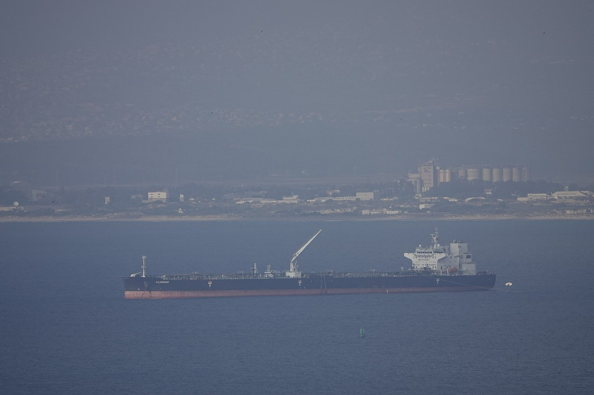
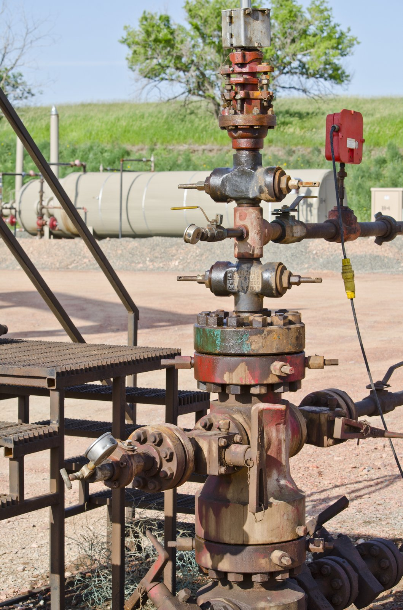
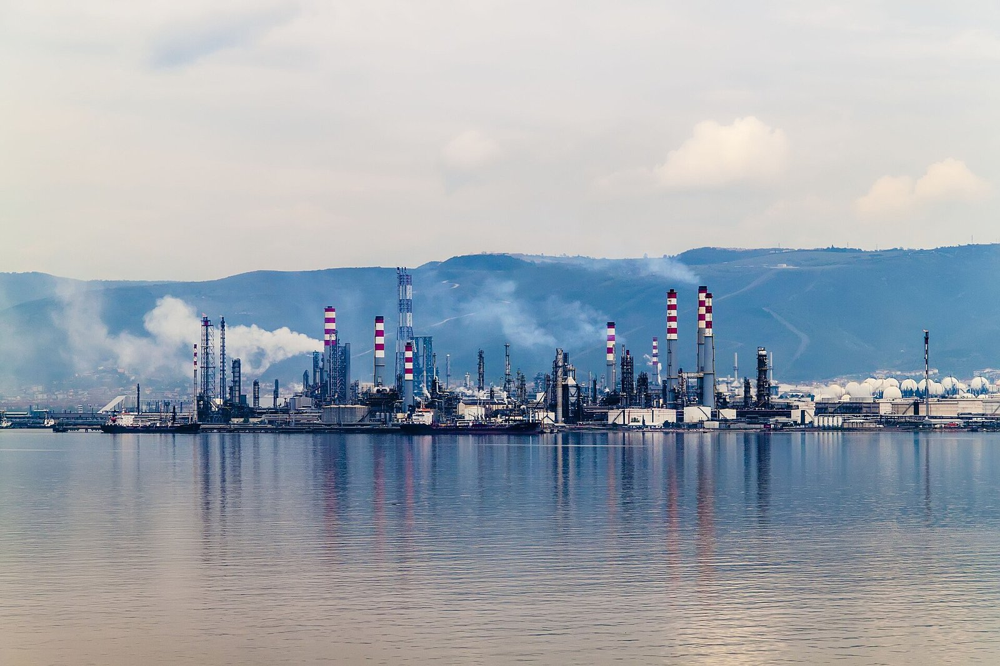
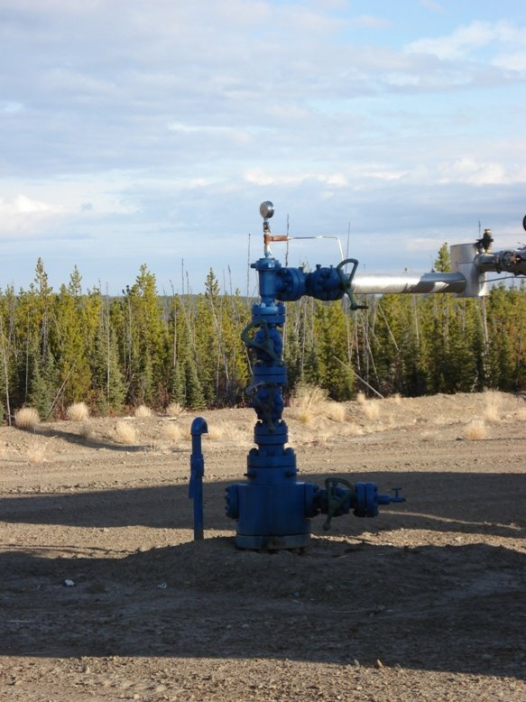
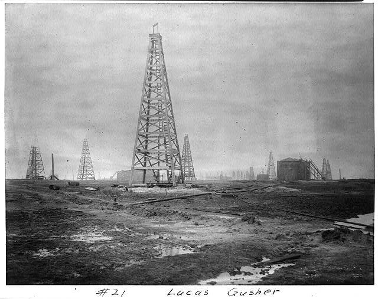

Chapter 1 — The Nature of Gas and Oil
Before you interpret a log or a GOR column, you need the language of the fluids themselves: what crude is made of, how density and sulfur set price, and how five reservoir fluid types behave from black oil to dry gas. This chapter is that vocabulary.
Learning goals
- Define petroleum and hydrocarbons by carbon number (gas vs liquid at surface).
- Relate °API gravity and sulfur (sweet/sour) to value and handling.
- Explain GOR, associated vs nonassociated gas, and condensate / wet vs dry gas.
- Distinguish the five reservoir hydrocarbon types (black oil through dry gas).

_at_the_anchorage_of_the_Port_of_Haifa,_Israel_-_2023-07-01_(DSC5705).jpg){kind=link}

{kind=link}
Petroleum and chemistry
Petroleum comes from Greek petra (rock) + oleum (oil). Strictly it means crude oil; in everyday use it covers oil and gas. Both are mostly carbon + hydrogen—molecules called hydrocarbons. Size decides phase at surface: 1–4 carbons → gas; 5+ → liquid (oil). Crude is a mixture of hundreds of molecules (chains, branches, rings) from about 5 to 60+ carbons.
Hydrocarbon series in crude
Most crudes contain four families:
- Paraffin / alkane — straight chain, single bonds. 18+ carbons → wax (waxy crude).
- Naphthene — saturated rings; high naphthene → more asphalt, often lower value.
- Aromatic — rings with double bonds; higher-octane naphtha (refinery premium), fruity smell.
- Asphaltic — 40–60+ C, brown/black, semi-solid.
Refinery labels: asphalt-base (little wax, black → lots of naphtha + asphalt), paraffin-base (little asphalt, greenish → wax, lube, kerosene), or mixed-base.
°API gravity and sulfur
°API is an API density scale: higher number = lighter fluid. Water = 10. Crudes roughly 5–55; average often 25–35; light ~35–45 (fluid, more naphtha, higher value); heavy <25 (viscous, darker, more asphalt, lower value).
Sulfur is an impurity—pollutes when burned and attacks plant equipment. Sweet <~1% S; sour >~1% S (discounted). Heavy tends to be sour; light tends to be sweet.
Benchmarks (price references): WTI roughly ~38–40 °API and ~0.3% S; Brent similar; Dubai ~31 °API and ~2% S.
Pour point, cloud point, appearance
Pour point is the lowest temperature at which oil still flows; higher pour point → more wax. Wax is liquid in a hot reservoir but can precipitate in cool tubing and flowlines. Cloud point is where oil turns cloudy (wax starts)—a few degrees above pour point. Very waxy crudes look yellowish; moderately waxy greenish; wax-poor black.
Color runs colorless to black (darker ≈ lower °API). Smell: naphtha-like (sweet), foul (sour), or fruity (aromatic). A crude stream is what a country or field sells—often a blend—with its own °API, %S, and pour point.
Measurement and refining (orientation)
Oil: 1 barrel = 42 US gallons; rates in bopd; 1 m³ ≈ 6.29 bbl. At the refinery, crude is heated and separated by boiling point (longer molecules boil higher). Bottoms are low-value residuum. Cuts include heavy gas oil → light gas oil → kerosene → naphtha. Because gasoline demand is high, cracking breaks long molecules into more naphtha. Feedstocks for plastics and other products also come out of the barrel.

{kind=link}
Natural gas
At surface, gas is mostly C1–C4: methane (pipeline gas, usually dominant), ethane, propane, butane. Propane/butane carry more heat; LPG is often pure propane. Inerts (water vapor, CO₂, N₂, helium) do not burn and dilute Btu. H₂S is not an inert—it is toxic, smells like rotten eggs, and corrodes metal. Gas without detectable H₂S is sweet; with H₂S is sour and must be treated before pipeline.

{kind=link}
Under pressure, much gas is dissolved in oil. GOR is standard cubic feet of gas per barrel (scf/bbl). Higher pressure (often deeper) dissolves more gas. As pressure drops on the way up, gas bubbles out (solution gas). The well’s producing GOR is what you measure at surface. Nonassociated gas stands alone (mostly methane). Associated gas contacts oil (gas cap + dissolved).
Condensate, wet/dry gas, NGL
At high temperature downhole, C5–C7 chains can stay in the gas phase; at surface they condense to liquid (~45–62 °API)—condensate. Wet gas carries condensate; dry gas does not. Condensate plus ethane/propane/butane = NGL (natural gas liquids).
Gas measurement: volume in scf (Mcf, MMcf, Bcf, Tcf) and heat in Btu. Typical pipeline ~1,000 Btu/cf. Sales may be by Mcf, by Btu, or both. A common barrel-of-oil-equivalent rule of thumb from the notes: ~1 bbl ≈ 6,040 cf of average gas.
Five reservoir hydrocarbon types
| Type | Downhole | Typical clues |
|---|---|---|
| Black oil | Liquid | GOR ≤ ~2,000; °API <45 |
| Volatile oil | Liquid | GOR ~2,000–3,300; °API ≥40 |
| Retrograde gas | Gas | Liquid drops out in the reservoir as pressure falls |
| Wet gas | Always gas | Liquid appears only at surface |
| Dry gas | Methane | No condensate below or at surface |

{kind=link}
Key terms
- °API gravity
- Density scale; higher = lighter crude.
- Sweet / sour
- Low vs high sulfur (and H₂S in gas).
- GOR
- Gas–oil ratio, typically scf/bbl.
- Condensate
- Light liquid dropping from gas at surface.
- Associated gas
- Gas in contact with oil (cap + solution).
- Retrograde gas
- Gas that forms liquid in-reservoir as pressure falls.